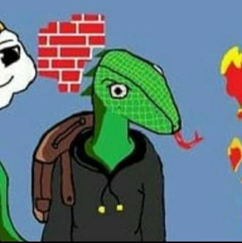
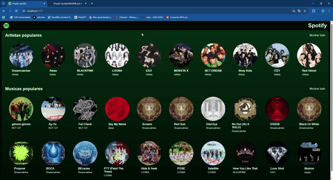
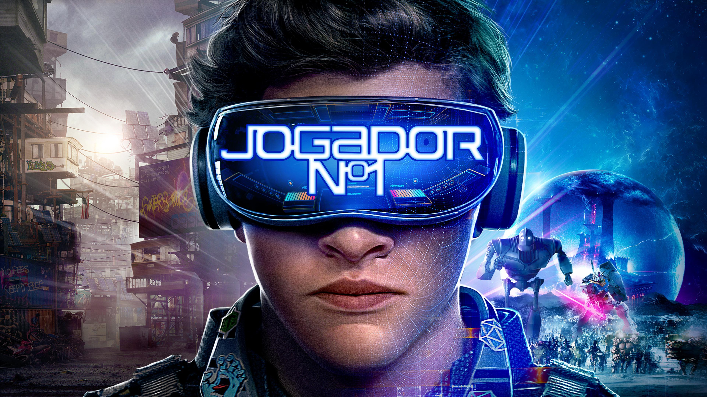
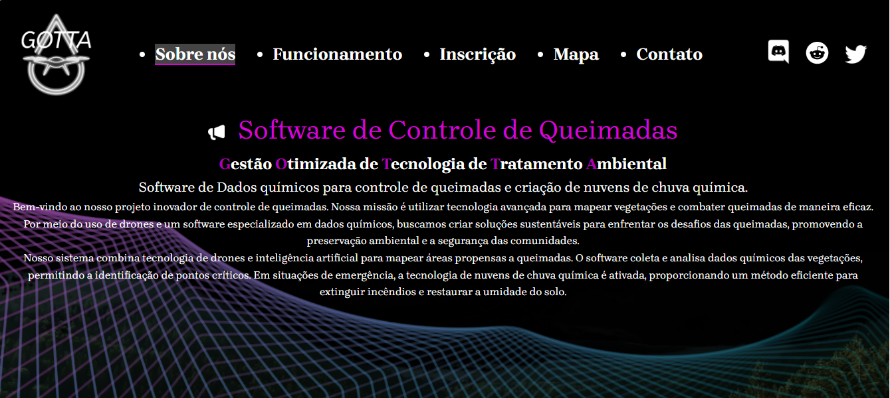

Dev fullstack e gamer
- Me chamo Filipe Teixeira - Osasco/SP. Atualmente estudo na Fatec de Osasco cursando Desenvolvimento de Software Multiplataforma 👾
- Estagiário em Gestão e Desempenho de TI na CSN (Companhia Siderúrgica Nacional) 🥽
- Embaixador do DIO Campus Expert - Turma 7 🧠
- Atualmente estudando Programação de Games ( C# e Unity) 🎮
Este projeto é uma réplica do Spotify, desenvolvida com fins exclusivamente educacionais, como parte do aprendizado prático durante o curso Jornada Full Stack da Hashtag Treinamentos.
objetivo principal foi colocar em prática conceitos de desenvolvimento Full Stack, simulando funcionalidades comuns de uma plataforma de streaming de músicas, desde a interface até a comunicação com o banco de dados.
⚠️ Aviso: Este projeto não possui fins comerciais e não está associado oficialmente ao Spotify.

Um artigo onde apresento a proposta de explorar diferentes tecnologias utilizadas no desenvolvimento de jogos digitais no filme / livro Jogador Nº1, focando na construção de uma experiência interativa para o jogador.
Eu busco demonstrar como ferramentas e linguagens de programação podem ser aplicadas na prática para criar sistemas de jogo, destacando a lógica por trás das interações, decisões e funcionamento do jogo.

Este projeto foi desenvolvido como parte de um trabalho acadêmico e tem como objetivo apresentar um software de controle de queimadas para evitar o impacto das queimadas no meio ambiente.
O site foi desenvolvido em HTML, CSS, Javascript e .NOT É composto por 5 páginas.
O site foi pensado para ser intuitivo, acessível e funcional, atendendo a um propósito social e educativo. Ele também busca incentivar a participação ativa da comunidade na preservação ambiental.